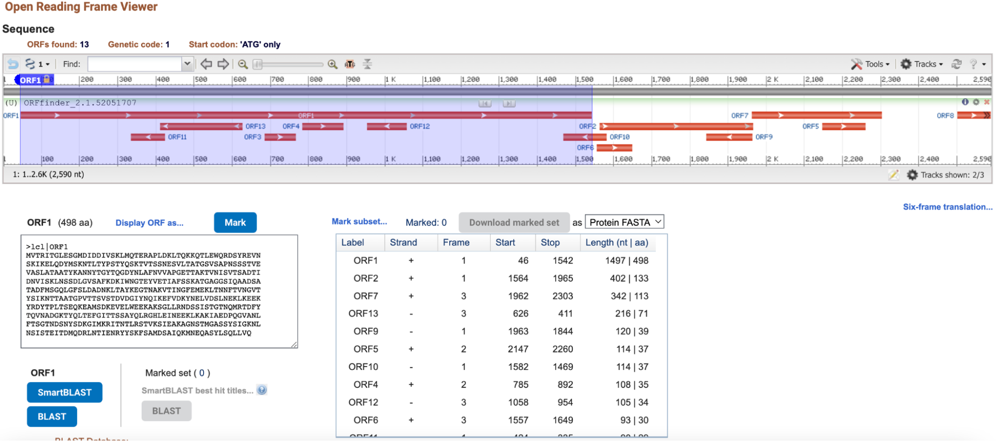
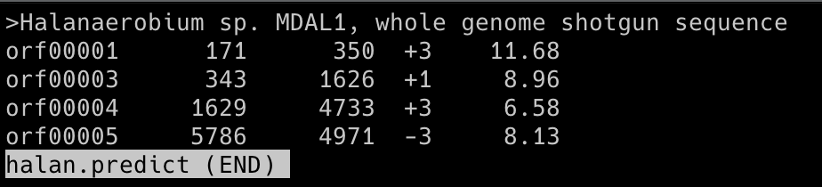
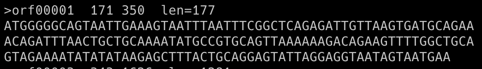

Early annotations determined coding regions of prokaryotic genomic DNA based on the longest open reading frame (ORF), as there are usually no introns. However, multiple potential start codons pose a difficulty to the process. Gene prediction tools identify the most likely CDS region, but as they are designed to predict DNA coding DNA sequences, RNA sequences are difficult to predict. RNA-seq provides information on gene expression, and transcription start/stop sites. Transcript data is used to complement gene prediction tools and provide a complete annotation of mRNA, ncRNA, and CDS locations.
Searches for open reading frames (ORFs) and returns a range of ORF locations (strand, frame, start, stop) and translated protein. ORF Finder Documentation
The three longest ORFs of a Bacillus subtilis genomic sequence were identified using ORF Finder. The picture below from the Open Reading Frame Viwer demonstrates ORF1 (reading frame 1), ORF2 (reading frame 1), and ORF7 (reading frame 3).
Unix-based program used to locate bacterial genes. The program locates long ORFs to identify CDS locations and returns information on the strand and reading frame. Glimmer Documentation
Glimmer was used to analyze part of a contig from a strain of Halanaerobium (halan.fasta). The genome is incomplete and was submitted by a group at the University of Pittsburgh on September 6, 2016. Some CDS regions have been annotated by NCBI Prokaryotic Pipeline Analysis. No mRNAs have been annotated. The complete genome of Halanaerobium praevalens, a related species isolated from the Great Salt Lake sediment in Utah, was used as a training set.
Commands used:
long-orfs -n -t 1.15 hprev_genome.fasta hprev.longorfs
extract -t hprev_genome.fasta hprev.longorfs > hprev.train
build-icm -r hprev.icm < hprev.train
glimmer3 -o50 -g110 -t30 halan.fasta hprev.icm halan
extract -t halan.fasta halan.predict > halan.glimmer
Below is the DNA sequence of ORF1 in FASTA format, according to the halan.glimmer file.
Based on the Glimmer results, the predicted CDS locations of the halan.fasta file is as follows:
CDS 1: 171 - 350, CDS 2: 343 - 1626, CDS 3: 1629 - 4733, CDS 4: 5786 - 4971